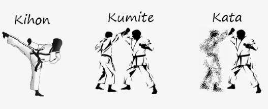

Disciplinas
Todas as escolas e estilos modernos de Karaté desenvolvem seu ensino no trinómio formado por kihon, kata e kumite.

KhionOs kihons são movimentos de defesa e ataque praticados pelo Karateca, na formação da estrutura básica da postura, bem como na execução de seus movimentos. Podem ser aplicados parado ou em movimento (andando).São utilizados nomes em japonês que, associados ao kihon, definem o número de repetições dos movimentos. Por exemplo: kihon go ho - são 5 repetições do kihon; kihon san - são 3 repetições do kihon. Há ainda o kihon parado (kihon sonoba). Muito utilizado para o fortalecimento da postura do praticante da arte marcial. |
KumiteKumite é nas modalidades modernas das artes marciais japonesas um dos componentes de treino e de competição, consiste na luta, no combate. No Karaté, conjuntamente com o kihon e o kata forma a tríade básica. É classificado conforme a finalidade pedagógica. Nem sempre foi parte das aulas porque os mestres consideravam arriscado praticá-lo sem necessidade real de luta. Ordinariamente, existem três tipos de treino com luta: jyu kumite, ou combate livre com controle; shiai kumite, combate de competição, semi-livre, com controle extremo dos golpes; e yakusoku kumite, combate combinado. |
KataKata é um conjunto de movimentos de ataque e defesa e está presente nas mais diversas artes marciais japonesas, realizados em conjunto ou individualmente. O significado mor é "forma", mas que adquire conotações diversas, dependendo da arte em questão. No Karaté, descreve uma simulação de combate detalhada de movimentos, que é praticada individualmente ou em equipa. Antes de executá-lo, o praticante deve passar por uma prática de técnicas fundamentais, os kihons; ao que, antes da popularização, era referenciado como "dança da morte", termo que bem descreve sua natureza. Dependendo do estilo, há variações de um mesmo kata. Na vertente Shotokan, todas as posições primam por ser as mais baixas. |
|---|